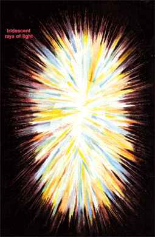

Expression of Consciousness: Higher Feelings
Statement Consciousness
makes: "I love universally"
Consciousness expresses itself as higher feelings like universal love; love
that goes beyond human beings and friends into a universal love for all
life.
Plane of existence: Spiritual Plane
Chakra: Ajna (Brow/#rd Eye)
The Celestial Body (Sixth Layer)
"The sixth level is the emotional level of the spiritual plane, called the celestial body. It extends about two to two and a half feet (60 to 75 cm) from the body. It is the level through which we experience spiritual ecstasy. We can reach it through meditation and many forms of transformation work. When we reach the point of "being", where we know our connection with all the universe, when we see the light and love in everything that exists, when we are immersed in the light and feel we are of it and it is us and feel that we are one with God, then we have raised our consciousness to the sixth level of the aura.
Unconditional love flows when there is a connection between the open heart chakra and the open celestial chakra. In this connection, we combine the love of humanity, our basic human love for our fellow humans in the flesh, with the spiritual ecstasy found in the spiritual love that goes beyond the physical reality to all the realms of existence. Combining these two creates the experience of unconditional love.
The celestial body appears to me in beautiful shimmering light, composed mostly of pastel colors. This light has a gold-silver shine and opalescent quality, like mother of pearl sequins. Its form is less defined than the etheric template level in that it simply appears to be composed of light that radiates out from the body like the glow around a candle. Within this glow are also brighter, stronger beams of light.
from Barbara Brennan, Hands of Light p.53
My comments on the Higher Emotional Body
The Higher or Spiritual Emotional Body (this being a preferable term I feel than "Celestial Body") is described here as the locus of higher spiritual emotions, such as the unconditional and universal love for all life, as opposed to the Psychic Body, which here is the locus of pure interpersonal human love, and the Physical Emotional body, which is concerned with individual feeling. This indicates in Hermetic Kabbalah that the Higher Emotional Body is equivalent to Hesed (boundless mercy), and astrologically to Jupiter in the old (traditional seven-planet) system, and Neptune and Pisces in the new Humanistic (Jungian-based) system (this representing the higher octave of Venus; perhaps Jupiter could be placed in the middle position). It might be suggested also that the Spiritual Emotional Body also lets one access the Inner Emotional Being, and ultimately, the Emotional-Vital Purusha.
The following table presents some rather tentative associations and correspondences with the higher emotional body, based on this line of reasoning. It is very hard to find exact equivalences here, as we aredealing with the transpersonal sphere which is less accesable than the ordinary personal realm.